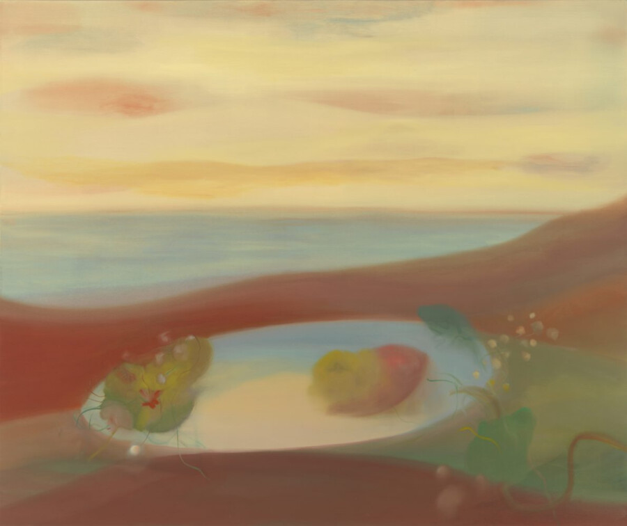

Michelle Wasson: Songs of the Marauder
ANDREW RAFACZ is delighted to announce Songs of the Marauder, a solo exhibition of new paintings from Michelle Wasson, in Gallery One. The exhibition opens Friday, February 20th and continues through Saturday, April 4th, 2026. This is the artist’s first solo exhibition with the gallery.
In Songs of the Marauder, Michelle Wasson’s paintings depict distant terrains and unfold with a slow, resonant cadence, articulated through twilight palettes of dusky pinks, smoldering oranges, and deepening blue hues. Her works function as meditative landscapes, where curved horizons dissolve into sealed oases, and doorways or portals suggest passages toward refuge and escape. Rendered through luminous, softly dissolving color, the paintings appear haunted by temporal residue, as though bearing fragments of previous occupation. For Wasson, each work—like a song—hovers between melancholy and hope, simultaneously gesturing toward the future and acknowledging humanity’s cyclical patterns of destruction and renewal.
Wasson engages obliquely with the historical traditions of floral still life and landscape painting, drawing from their legacies without reproducing their formal or ideological constraints. Through an abstracted, oneiric visual language, her imagery loosens attachment to specific places or notions of possession. She subtly weaves references to the female body, another site embedded with its own personal histories and emotional topographies, into other formal elements of her landscapes. Two mounds could be parting legs, a horizontal gesture, a resting body. Vegetal forms operate as emotional registers rather than fixed symbols.
Horizons shimmer throughout the series as distant promises, beautiful and treacherous, marking the edge of our known world. This sensibility underscores Wasson’s broader engagement with the historical toll of imperialism embedded within traditions of the landscape genre. By abstracting visual language and destabilizing references of territory or control, her work resists inherited power structures and reframes her landscapes as an emotional and communal presence rather than a commodified one.
Having worked across painting and printmaking throughout her career, Wasson’s return to oil marks a shift toward a more deliberate and reflective mode of production. The medium’s temporal demands encourage prolonged engagement, allowing form and color to accumulate gradually and generate depth and tonal complexity. The move toward darker chromatic ranges recalibrates the works’ emotional register, intensifying their atmospheric resonance. Oscillating between abstraction and figuration, these paintings subtly echo the sensibilities of artists such as Agnes Pelton, Georgia O’Keeffe, Leonora Carrington, and Remedios Varo. Rather than referencing their subject matter directly, Wasson draws from their attentiveness to light and mood, treating color as an experiential force that shapes perception through affect rather than description.
Wasson’s destabilization of fixed geography and pictorial boundaries gently unsettles inherited visual frameworks, resigning their claims to authority, ownership, and control. By rendering place as atmosphere and affect rather than mapped terrain, the paintings temper the marauder’s gaze, transforming it into a mode of attentiveness, mischief, and ethical accountability.
Songs of the Marauder acts as a site to feel, envision, and reflect. It invites viewers to confront both historical legacies and internalized impulses that shape our perception of space, and proposes another mode of looking, grounded in care, attentiveness, and imagination.
MICHELLE WASSON (American, b. 1974) lives and works in Chicago, IL. She received her BFA in painting from the University of Illinois, Champaign-Urbana in 1996, and her MFA in painting from Washington University in 2001. Recent solo exhibitions include Riverside Art Center (Riverside, IL), Galleri Urbane (Dallas, TX), Epiphany Center for the Arts (Chicago, IL), and Dominican University (Chicago, IL). Recent and select group exhibitions include Yale University, Institute of Sacred Music (NewHaven, CT), Heaven Gallery (Chicago, IL), ANDREW RAFACZ (Chicago, IL), Galleri Urbane (Dallas, TX) , Racecar Factory (Indianapolis, IN), Real Tinsel (Milwaukee, WI), Cleaner Gallery (Chicago, IL), Hyde Park Art Center (Chicago, IL), and the Elmhurst Art Museum (Elmhurst, IL). Wasson has been reviewed and featured in many publications, including The Austin Chronicle, Bad at Sports, Brooklyn Magazine, The Chicago Tribune, Hyperallergic, New American Paintings, New Art Examiner, and NewCity Art. Wasson was the Co-Founder and Director of Tiger Strikes Asteroid (Chicago, IL) from 2016-2019. Her work is included in numerous public and private collections.